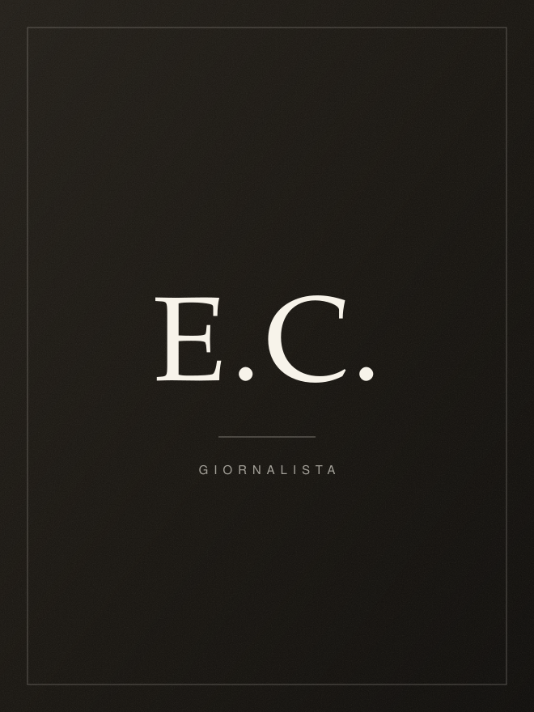

Parto dai dati aperti
ISTAT, Regione Lombardia, Città metropolitana, ANAC, ARPA, ANBSC, MEF. Se il dato è pubblico, lo scarico e lo pubblico con il codice che l'ha prodotto.
Profilo
Giornalismo di cronaca, comunicazione istituzionale, dati. Un archivio di lavoro prima che un portfolio.

Emiliano Cuti, giornalista con lunga esperienza nella cronaca locale e nella comunicazione istituzionale.
Corrispondente prima per La Provincia di Cremona e poi per Il Cittadino, è autore di saggi sul socialismo giuridico e sulla pena di morte. Nel 2007 ha vinto il premio Borsa Verde per i giovani giornalisti in Campania.
Laureato in Scienze Politiche e Relazioni Internazionali, è stato cultore della materia di Storia del diritto italiano all’università degli Studi di Milano. Oggi segue con passione la finanza, il mondo del software e dell'intelligenza artificiale, le lingue e la letteratura francese e angloamericana.
ISTAT, Regione Lombardia, Città metropolitana, ANAC, ARPA, ANBSC, MEF. Se il dato è pubblico, lo scarico e lo pubblico con il codice che l'ha prodotto.
Confronto i numeri con il documento originale, riga per riga. Quando non tornano, lo scrivo: nel dossier sulla mensa di Paullo, 89 cifre su 89 sono state ricontrollate e cinque segnalazioni si sono rivelate falsi allarmi.
Ogni inchiesta ha una sezione «Cosa non sappiamo». È la parte più utile: dice dove il dato finisce e dove comincia la domanda da fare all'amministrazione.
L'Atlante incrocia diciassette indicatori da dodici inchieste. Serve a vedere le relazioni, non a stabilire una classifica definitiva.
L'archivio è in costruzione. Le inchieste sono quindici, i comuni quattordici, gli indicatori dell'Atlante diciassette.